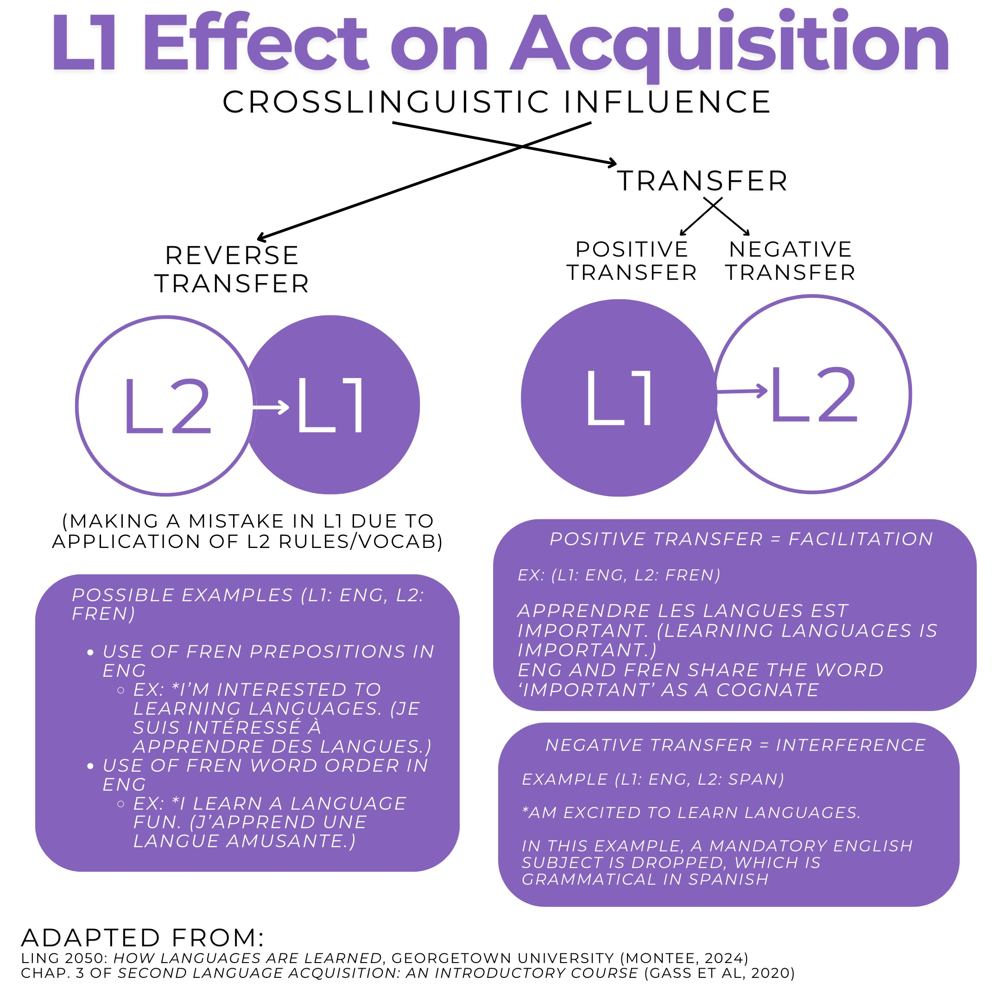

Firstly, many SLA theories are not compatible with theories in other fields, such as cognitive science theories. They lack specific cognitive architecture, or do not acknowledge the different types of knowledge required for language learning. Secondly, previous SLA researchers focused primarily on monolingual language learning, meaning a significant gap of information on multilingual learners needs to be filled. This especially holds true as a majority of the world speaks more than one language. Finally, most SLA theories (except for sociocultural ones) can not account for all the data we have from each sphere, as previously alluded to. Despite the lack of a definitive, conclusive process for second language acquisition, certain restraints have been agreed upon across most theories.
These maturational constraints include individualistic differences, preferences, and a learner’s environment. Most theories consider that a lot of acquisition occurs incidentally, or implicitly, without intentional learning efforts made by a teacher or student. Theorists also judge results as being variable across subsystems of linguistics and in overall proficiency. For example, two students in the same language program may graduate as two different communicators: while one utilizes rarer vocabulary, the other speaks with a stronger accent. From a more psycholinguistic perspective, the principle of the Poverty of the Stimulus describes how learners eventually produce output past the point of input they receive. This explains why children can innately learn their native language, and not require explicit instruction to do so.
Keeping these factors in mind, here are the main points which second language acquisition theories must account for:
Interlanguage → L2 learners develop grammatical and lexical systems to acquire their target language (TL), even if the rules don't ascribe to commonly accepted structures. For example, Spanglish (the result of speakers combining Spanish and English), acts as an interlanguage.
We can understand one’s interlanguage by looking at the non-target-like utterances/phrases learners make.
Variations in language grammar, morphologies, and other linguistic factors must be considered as an individual difference, as the further two languages are apart structurally, the more difficult that it may be to acquire the target language. (Textbook source from Eliott interview) Therefore, for some learners, they will be able to acquire their target language at a much quicker rate.
All SLA theories account for the fact that both input and output are necessary for language learning.
Affective filter: after critical period ends cognitive effort is needed to improve and people have different cognitive abilities